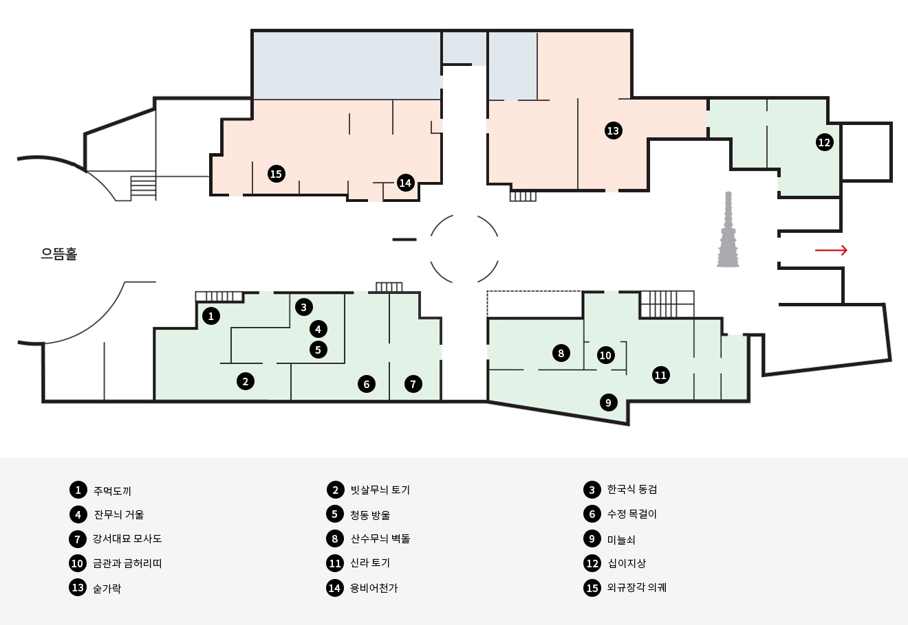
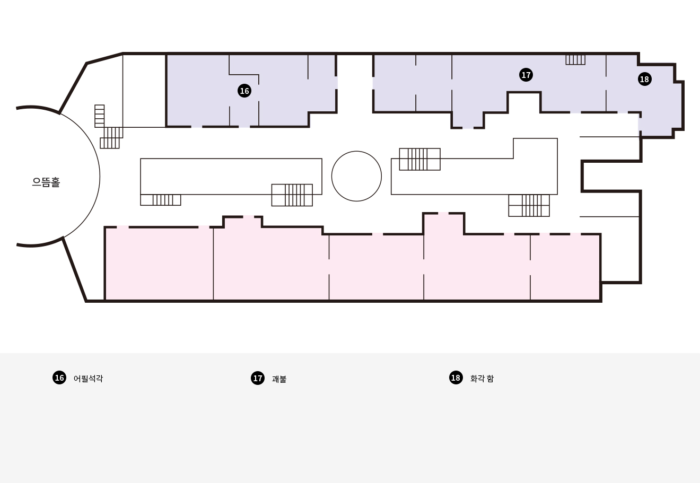
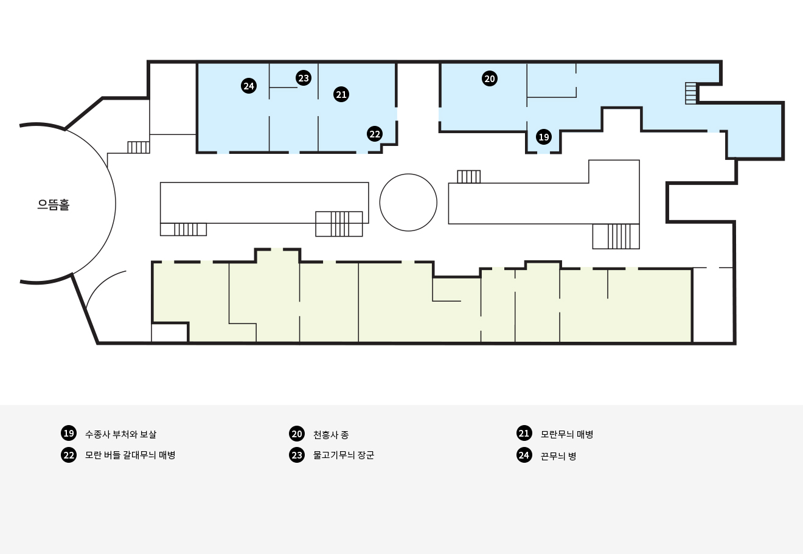

'시간을 따라 이어진 한국의 역사'
1층
선사•고대관 / 중•근세관
국립중앙박물관 1층은 선사시대부터 조선에 이르기까지,
한국 역사의 흐름을 한눈에 살펴볼 수 있는 공간입니다.
선사·고대관에서는 구석기 시대의 생활 유물과
삼국 문화의 찬란한 유산을 만나볼 수 있으며,
중·근세관에서는 고려와 조선 시대를 거쳐 형성된
정치·문화·생활의 변화를 깊이 있게 소개합니다.
오랜 시간 축적된 우리의 역사와 문화를 통해
한국인의 삶과 정신을 가까이에서 느낄 수 있습니다.

'예술과 마음이 머무는 공간'
2층
서화관 / 기증관 / 사유의 방
국립중앙박물관 2층은 한국 전통 예술의 아름다움과
기증 문화의 의미를 함께 경험할 수 있는 공간입니다.
서화관에서는 섬세한 필치와 깊은 여운이 담긴
서예와 회화를 감상할 수 있으며,
기증관에서는 문화유산을 후대에 전하고자 한 기증자들의
뜻과 이야기를 만나볼 수 있습니다.
또한 사유의 방은 고요한 분위기 속에서 반가사유상을 마주하며
천천히 사색과 쉼을 경험할 수 있는 특별한 전시 공간입니다.

'문화로 이어지는 세계와의 만남'
3층
조각•공예관 / 세계문화관
국립중앙박물관 3층은 한국 전통 공예의 정교함과
세계 여러 문화의 다양성을 함께 체험할 수 있는 공간입니다.
조각·공예관에서는 불교 조각과 도자, 금속 공예 등
시대를 대표하는 뛰어난 장인 정신을 감상할 수 있으며,
세계문화관에서는 아시아와 세계 각국의 문화유산을 통해
서로 다른 문화가 만들어낸 아름다움과 가치를 소개합니다.
과거와 현재, 그리고 세계를 잇는 다양한 문화의 흐름 속에서
더 넓은 시각과 새로운 경험을 만나볼 수 있습니다.
